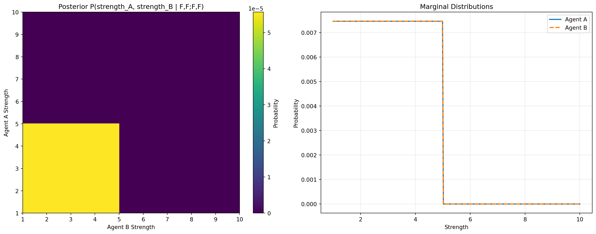

import jax
import jax.numpy as np
from memo import memo
from matplotlib import pyplot as plt
from functools import partial
# Model parameters (from original WebPPL code)
alpha = 13.5 # effort cost coefficient, from original paper; kept fixed for replication
beta = 24.5 # inequality aversion coefficient, from original paper; kept fixed for replication
weight_box = 5 # weight of the box
low_reward = 10
high_reward = 20
# Discretized spaces (for computational tractability)
efforts = np.array([0, 0.05, 0.1, 0.15, 0.2, 0.25, 0.3, 0.35, 0.4, 0.45, 0.5,
0.55, 0.6, 0.65, 0.7, 0.75, 0.8, 0.85, 0.9, 0.95, 1.0])
# Discretized strength space (replacing continuous uniform(1,10))
strength_values = np.linspace(1., 10., 301) # [1,10] with step size of .03
DEBUG = TrueXiang2023 Exp1 Round3 Modeling in Memo
Code adapted from https://github.com/jczimm/competence_effort/blob/main/Code/main_text/exp1_simulation.R
Setup
Helper Functions (JAX-compatible)
@jax.jit
def lift(strength, effort):
"""Single agent lift: can they lift the box?"""
return (effort * strength >= weight_box).astype(float)
@partial(jax.jit, static_argnames=['model_features'])
def lift2(strength1, strength2, effort1, effort2, model_features):
"""Two-agent joint lift: can they lift the box together?"""
k = 3.5 # from original paper; kept fixed for replication
return jax.lax.cond(
ModelFeatures.SAFE in model_features,
lambda _: (effort1*strength1 + effort2*strength2) >= (weight_box + ((1-effort1)+(1-effort2))*k),
lambda _: (effort1 * strength1 + effort2 * strength2 >= weight_box),
operand=None
).astype(float)
@jax.jit
def gini(effort1, effort2):
"""Gini coefficient for inequality aversion"""
return np.where(
np.abs(effort1 - effort2) < 1e-8, # instead of effort1 == effort2 (to bypass floating point error)
0.0,
np.abs(effort1 - effort2) / 4 / (effort1 + effort2)
)Bayesian Inference Over Agent Strengths
The original WebPPL code infers agent strengths from observed outcomes in rounds 1 and 2.
@jax.jit
def argmax_utility(strength, reward, effort_space=efforts):
"""Find effort that maximizes utility for single agent"""
utilities = reward * lift(strength, effort_space) - alpha * effort_space
return effort_space[np.argmax(utilities)]
@jax.jit
def outcome(strength, reward):
"""Predicted outcome (success probability) for single agent at optimal effort"""
opt_effort = argmax_utility(strength, reward)
return lift(strength, opt_effort)
@memo(save_comic="memo-comic-xiang-strength-inference", debug_trace=DEBUG)
def infer_strengths[query_sa: strength_values, query_sb: strength_values](
r1_outcome_a, r1_outcome_b, r2_outcome_a, r2_outcome_b
):
"""
Infer posterior distribution over agent strengths given observed outcomes.
Observations:
- Round 1 (low reward = 10): A and B each attempt individual lifts
- Round 2 (high reward = 20): A and B each attempt individual lifts
Returns: Pr[strength_a == query_sa AND strength_b == query_sb | observations]
"""
# The participant models that the agents have some strength in [1, 10]
participant: thinks[
agent_a: given(sa in strength_values, wpp=1),
agent_b: given(sb in strength_values, wpp=1)
]
# Participant witnesses the outcomes and conditions on them
# Condition on round 1 outcomes (low reward)
participant: observes_that [outcome(agent_a.sa, {low_reward}) == r1_outcome_a]
participant: observes_that [outcome(agent_b.sb, {low_reward}) == r1_outcome_b]
# Condition on round 2 outcomes (high reward)
participant: observes_that [outcome(agent_a.sa, {high_reward}) == r2_outcome_a]
participant: observes_that [outcome(agent_b.sb, {high_reward}) == r2_outcome_b]
# Push query variables into participant frame
# and return participant's estimate of the posterior probability for the agents having these given (query) strengths
participant: knows(query_sa)
participant: knows(query_sb)
return participant[Pr[agent_a.sa == query_sa and agent_b.sb == query_sb]]Game-Theoretic Joint Optimization of Effort
The original WebPPL code models:
- Two agents with uncertain strengths (posterior distributions from rounds 1-2)
- Agents reason about each other’s efforts in round 3 (joint task)
- Iterative best-response until Nash equilibrium
- Optimization over initial effort to maximize joint utility
Key insight: The game-theoretic reasoning operates on expected utilities over the posterior distribution of strengths. This is not purely probabilistic reasoning (like the inference above), but rather decision-theoretic optimization under uncertainty.
Proposed approach:
- Keep the Bayesian inference in
@memo(already done above) - Implement the game-theoretic equilibrium finding in pure JAX (deterministic optimization)
- Combine them: compute equilibrium for each strength pair, weighted by posterior
from enum import Flag, auto
class ModelFeatures(Flag):
NONE = 0
GINI = auto()
SAFE = auto()
@partial(jax.jit, static_argnames=['model_features'])
def lift2(strength1, strength2, effort1, effort2, model_features):
"""Two-agent joint lift: can they lift the box together?"""
k = 3.5 # from original paper; kept fixed for replication
return jax.lax.cond(
ModelFeatures.SAFE in model_features,
lambda _: (effort1*strength1 + effort2*strength2) >= (weight_box + ((1-effort1)+(1-effort2))*k),
lambda _: (effort1 * strength1 + effort2 * strength2 >= weight_box),
operand=None
).astype(float)
@jax.jit
def gini(effort1, effort2):
"""Gini coefficient for inequality aversion"""
return np.where(
np.abs(effort1 - effort2) < 1e-8, # instead of effort1 == effort2 (to bypass floating point error)
0.0,
np.abs(effort1 - effort2) / 4 / (effort1 + effort2)
)
@partial(jax.jit, static_argnames=['model_features'])
def outcome2(strength_a, strength_b, effort_a, effort_b, model_features):
"""Predicted outcome (success probability) for joint action"""
if np.ndim(strength_a) > 0:
# translation of listMean(map2(function(i,j){return lift2(i,j,box,effort,effort2)}, strength,strength2))
# note that map2 maps over the input arrays *concurrently*
outcomes = jax.vmap(
lambda sa, sb: lift2(sa, sb, effort_a, effort_b, model_features)
)(strength_a, strength_b)
return np.mean(outcomes)
else:
return lift2(strength_a, strength_b, effort_a, effort_b, model_features)
@partial(jax.jit, static_argnames=['model_features'])
def joint_utility_multiple_strength(strength_a, strength_b, effort_a, effort_b, model_features):
"""
Compute utilities for both agents given multiple fixed strengths and efforts.
Returns: (utility_a, utility_b, success_prob)
"""
reward = high_reward # Round 3 uses high reward
success = outcome2(strength_a, strength_b, effort_a, effort_b, model_features=model_features)
gini_coef = jax.lax.cond(
ModelFeatures.GINI in model_features,
lambda _: gini(effort_a, effort_b),
lambda _: np.array(0.0),
operand=None
)
utility_a = reward * success - alpha * effort_a - beta * gini_coef
utility_b = reward * success - alpha * effort_b - beta * gini_coef
return utility_a, utility_b, success
@partial(jax.jit, static_argnames=['model_features'])
def best_response_a(strength_a, strength_b, effort_b, model_features):
"""
Find agent A's best response to agent B's effort.
Agent A optimizes: max_{e_a} E[utility_a(e_a, e_b) | s_a, s_b]
"""
utilities = jax.vmap(
lambda ea: joint_utility_multiple_strength(strength_a, strength_b, ea, effort_b, model_features=model_features)[0]
)(efforts)
return efforts[np.argmax(utilities)]
@partial(jax.jit, static_argnames=['model_features'])
def best_response_b(strength_a, strength_b, effort_a, model_features):
"""
Find agent B's best response to agent A's effort.
"""
utilities = jax.vmap(
lambda eb: joint_utility_multiple_strength(strength_a, strength_b, effort_a, eb, model_features=model_features)[1]
)(efforts)
return efforts[np.argmax(utilities)]
def find_equilibrium(strength_a, strength_b, init_effort, model_features, max_depth=10, verbose=False, trace=False):
"""
Find Nash equilibrium through mutually recursive best responses.
This implementation EXACTLY matches the WebPPL version's recursive structure:
- a(depth, reward) calls b(depth-1, reward)
- b(depth, reward) calls a(depth, reward) if depth > 0, else uses init_effort
- Convergence checked using findDepth() at specific depths [1, 2, 5, 10]
Args:
strength_a: Agent A's strength (scalar or array)
strength_b: Agent B's strength (scalar or array)
init_effort: Initial effort for agent B at depth=0
max_depth: Maximum recursion depth
verbose: Print convergence info
trace: Print detailed trace of recursive calls
Returns:
(effort_a, effort_b, converged_depth)
"""
reward = high_reward # Round 3 reward (matches WebPPL r3_reward)
# Cache for memoizing recursive calls (mimics WebPPL's call stack behavior)
cache_a = {}
cache_b = {}
def a(depth):
"""Agent A's best response at given recursion depth."""
if depth in cache_a:
return cache_a[depth]
# Get B's effort from one level down
effort_b = b(depth - 1)
if trace:
print(f" a(depth={depth}): B's effort from b({depth-1}) = {effort_b:.4f}")
# A optimizes given B's effort
effort_a = best_response_a(strength_a, strength_b, effort_b, model_features)
if trace:
print(f" a(depth={depth}): A's best response = {effort_a:.4f}")
cache_a[depth] = effort_a
return effort_a
def b(depth):
"""Agent B's best response at given recursion depth."""
if depth in cache_b:
return cache_b[depth]
# Base case: depth 0 uses initial effort
if depth == 0:
if trace:
print(f" b(depth={depth}): Using init_effort = {init_effort:.4f}")
cache_b[depth] = init_effort
return init_effort
# Get A's effort from same level
effort_a = a(depth)
if trace:
print(f" b(depth={depth}): A's effort from a({depth}) = {effort_a:.4f}")
# B optimizes given A's effort
effort_b = best_response_b(strength_a, strength_b, effort_a, model_features)
if trace:
print(f" b(depth={depth}): B's best response = {effort_b:.4f}")
cache_b[depth] = effort_b
return effort_b
def findDepth(x):
"""Check if convergence achieved at depth x (matches WebPPL logic)."""
b_at_x = b(x)
b_at_x_plus_1 = b(x + 1)
converged = np.abs(b_at_x - b_at_x_plus_1) < 0.06
if trace:
print(f"findDepth({x}): b({x})={b_at_x:.4f}, b({x+1})={b_at_x_plus_1:.4f}, diff={np.abs(b_at_x - b_at_x_plus_1):.4f}, converged={converged}")
return x if converged else -1
# Try depths in order [1, 2, 5, 10] (matches WebPPL ds array)
candidate_depths = [1, 2, 5, 10]
if trace:
print(f"\n=== find_equilibrium(init_effort={init_effort:.4f}) ===")
for depth_candidate in candidate_depths:
if depth_candidate > max_depth:
break
result = findDepth(depth_candidate)
if result > 0:
# Converged at this depth
# Return efforts from depth+1 for A, depth for B (matches WebPPL lines 209-210)
effort_a = a(result + 1)
effort_b = b(result)
if verbose:
print(f" Converged at depth {result}: effort_a={effort_a:.4f}, effort_b={effort_b:.4f}")
return effort_a, effort_b, result
# Did not converge
print(f"Warning: Effort could not converge in {candidate_depths[-1]} iterations")
effort_a = a(candidate_depths[-1] + 1)
effort_b = b(candidate_depths[-1])
return effort_a, effort_b, candidate_depths[-1]
# To find the optimal initial effort, we'd search over init_effort values
def starting_effort(posterior_sa, posterior_sb, model_features):
"""
Find initial effort that maximizes expected joint utility.
This matches the WebPPL startingEffort() function which optimizes jointU.
Args:
posterior_sa - sampled from posterior
posterior_sb - sampled from posterior
Returns:
Optimal initial effort value
"""
joint_utilities = []
for init_effort in efforts:
stats = expected_joint_utility(init_effort, posterior_sa, posterior_sb, model_features=model_features)
joint_utilities.append(stats['jointU']) # Optimize joint utility (matches WebPPL)
joint_utilities = np.array(joint_utilities)
return efforts[np.argmax(joint_utilities)]
def expected_joint_utility(init_effort, posterior_sa, posterior_sb, model_features):
"""
Compute expected utilities and efforts over posterior distribution of strengths.
This matches the WebPPL jointUtility() function output, computing expectations over
the posterior distribution of agent strengths.
Args:
posterior_sa: sampled from posterior
posterior_sb: sampled from posterior
init_effort: Initial effort for agent B to start equilibrium search
Returns:
dict with keys: joint_utility, agent_a_utility, agent_b_utility,
agent_a_effort, agent_b_effort, outcome_prob
"""
# Compute expectations by averaging over samples
effort_a, effort_b, depth = find_equilibrium(posterior_sa, posterior_sb, init_effort, model_features)
# print(f"Strengths (A={posterior_sa:.2f}, B={posterior_sb:.2f}): Efforts (A={effort_a:.4f}, B={effort_b:.4f})")
# Compute utilities and outcome at equilibrium
utility_a, utility_b, success_prob = joint_utility_multiple_strength(posterior_sa, posterior_sb, effort_a, effort_b, model_features=model_features)
# Test equilibrium finding with a sample strength pair
if (init_effort == 0.0 or not (ModelFeatures.GINI in model_features)) and DEBUG:
print(f"\n=== EQUILIBRIUM FINDING (init_effort={init_effort}, sample strength pair) ===")
print(f"Convergence depth: {depth}")
print(f"Agent A equilibrium effort: {effort_a:.4f}")
print(f"Agent B equilibrium effort: {effort_b:.4f}")
return {
'jointU': utility_a + utility_b,
'aU': utility_a,
'bU': utility_b,
'aE': effort_a,
'bE': effort_b,
'P': outcome2(posterior_sa, posterior_sb, effort_a, effort_b, model_features=model_features)
}
# for solitary/compensatory effort models
def independent_effort_optimization(others_effort, posterior_sa, posterior_sb):
"""
Compute efforts when each agent independently optimizes assuming
partner uses a fixed effort level (solitary=0, compensatory=1).
This is NOT game-theoretic - no mutual best response.
Each agent simply optimizes: max_{e} E[U(e, others_effort)]
"""
# Agent A optimizes assuming B uses others_effort
utilities_a = jax.vmap(
lambda ea: joint_utility_multiple_strength(
posterior_sa, posterior_sb, ea, others_effort, model_features=ModelFeatures.NONE
)[0] # Get utility_a
)(efforts)
effort_a = efforts[np.argmax(utilities_a)]
# Agent B optimizes assuming A uses others_effort
utilities_b = jax.vmap(
lambda eb: joint_utility_multiple_strength(
posterior_sa, posterior_sb, others_effort, eb, model_features=ModelFeatures.NONE
)[1] # Get utility_b
)(efforts)
effort_b = efforts[np.argmax(utilities_b)]
# Compute final statistics with these independent efforts
utility_a, utility_b, success_prob = joint_utility_multiple_strength(
posterior_sa, posterior_sb, effort_a, effort_b, model_features=ModelFeatures.NONE
)
return {
'jointU': utility_a + utility_b,
'aU': utility_a,
'bU': utility_b,
'aE': effort_a,
'bE': effort_b,
'P': success_prob
}Running the Model for a Scenario
class Model():
def __init__(self, r1_outcome_a, r1_outcome_b, r2_outcome_a, r2_outcome_b):
# 1. Get posterior over strengths
if DEBUG:
print("\nComputing posterior over agent strengths...")
posterior_strengths = infer_strengths(r1_outcome_a, r1_outcome_b, r2_outcome_a, r2_outcome_b)
if DEBUG:
# DEBUG: Bayesian inference statistics
print("\n=== BAYESIAN INFERENCE STATISTICS ===")
posterior_2d = posterior_strengths.reshape(len(strength_values), len(strength_values))
print(f"Posterior shape: {posterior_2d.shape}")
print(f"Number of non-negligible posterior samples (compare to WebPPL): {np.sum(posterior_strengths > 1e-10)}")
print(f"Total probability mass: {np.sum(posterior_2d):.6f}")
# Compute marginals
marginal_a = np.sum(posterior_2d, axis=1)
marginal_b = np.sum(posterior_2d, axis=0)
# Compute statistics
mean_sa = np.sum(marginal_a * strength_values)
mean_sb = np.sum(marginal_b * strength_values)
print(f"Agent A strength - mean: {mean_sa:.4f}, min: {strength_values[0]:.4f}, max: {strength_values[-1]:.4f}")
print(f"Agent B strength - mean: {mean_sb:.4f}, min: {strength_values[0]:.4f}, max: {strength_values[-1]:.4f}")
# Find high-probability regions
high_prob_threshold = np.max(posterior_2d) * 0.1
high_prob_indices = np.where(posterior_2d > high_prob_threshold)
print(f"High probability region (top 10%): strength_a in [{strength_values[np.min(high_prob_indices[0])]:.2f}, {strength_values[np.max(high_prob_indices[0])]:.2f}]")
print(f" strength_b in [{strength_values[np.min(high_prob_indices[1])]:.2f}, {strength_values[np.max(high_prob_indices[1])]:.2f}]")
# Find the actual support of the posterior (non-zero probability mass)
posterior_support = posterior_2d > 1e-10
support_indices = np.where(posterior_support)
if len(support_indices[0]) > 0:
print(f"Non-negligible posterior support:")
print(f" strength_a in [{strength_values[np.min(support_indices[0])]:.2f}, {strength_values[np.max(support_indices[0])]:.2f}], with mean {np.sum(marginal_a * strength_values):.2f}")
print(f" strength_b in [{strength_values[np.min(support_indices[1])]:.2f}, {strength_values[np.max(support_indices[1])]:.2f}], with mean {np.sum(marginal_b * strength_values):.2f}")
else:
print("\nWARNING: Posterior has no support! Inference may have failed.")
self.posterior = posterior_strengths.reshape(len(strength_values), len(strength_values))
# assert that probabilities above 1e-10 all are the same
unique_probs = np.unique(self.posterior[self.posterior > 1e-10])
if len(unique_probs) > 1:
print("\nERROR: Posterior probabilities vary! This WILL affect sampling accuracy.")
print(f"Unique non-negligible posterior probabilities: {unique_probs}")
assert len(unique_probs) == 1, "Posterior probabilities vary above threshold!"
# if probs vary, would need to use a larger number of samples, to approximate the samples correctly, e.g.:
# num_samples = int(prob * 1000)
# posterior_sb.extend([sb] * num_samples)
# posterior_sa.extend([sa] * num_samples)
# 2. Convert from posterior point probabilities to posterior samples
# (there should be sample counts proportional to the posterior probabilities)
posterior_sa = []
posterior_sb = []
for i, sa in enumerate(strength_values):
for j, sb in enumerate(strength_values):
prob = self.posterior[i, j]
if prob > 1e-10:
posterior_sa.extend([sa] * 1)
posterior_sb.extend([sb] * 1)
self.posterior_sa = np.array(posterior_sa)
self.posterior_sb = np.array(posterior_sb)
if DEBUG:
print(f"First 5 samples (sa, sb): {np.array(list(zip(list(reversed(self.posterior_sa))[:5], list(reversed(self.posterior_sb))[:5])))}")
# ^reverse for the sake of matching the order by which webppl enumerates
def _check_stats(self, stats):
if DEBUG:
print("\n=== FINAL RESULTS ===")
if hasattr(self, 'optimal_init_effort'):
print(f"Optimal starting effort: {self.optimal_init_effort}")
print(f"Joint utility at optimum: {stats['jointU']:.6f}")
print(f"Agent A utility: {stats['aU']:.6f}")
print(f"Agent B utility: {stats['bU']:.6f}")
print(f"Agent A equilibrium effort: {stats['aE']:.6f}")
print(f"Agent B equilibrium effort: {stats['bE']:.6f}")
print(f"Expected outcome probability: {stats['P']:.6f}")
print(f"\n(Compare to original WebPPL output)")
# Sanity check: joint utility should equal sum of individual utilities
joint_check = stats['aU'] + stats['bU']
if abs(joint_check - stats['jointU']) > 1e-5:
print(f"WARNING: Joint utility mismatch! {stats['jointU']:.6f} != {joint_check:.6f}")
def joint_effort(self, model_features=ModelFeatures.GINI):
# Find optimal initial effort (by searching over effort space)
if DEBUG:
print("\n=== FINDING OPTIMAL INITIAL EFFORT ===")
self.optimal_init_effort = starting_effort(self.posterior_sa, self.posterior_sb, model_features=model_features)
if DEBUG:
print(f"Using initial effort: {self.optimal_init_effort}")
# Compute expected statistics at equilibrium (utilities, efforts, outcome)
if DEBUG:
print("\nComputing expected statistics at equilibrium...")
stats = expected_joint_utility(self.optimal_init_effort, self.posterior_sa, self.posterior_sb, model_features=model_features)
self._check_stats(stats)
return stats
def compensatory_effort(self):
stats = independent_effort_optimization(
others_effort=1.0, # Assume partner uses maximum effort
posterior_sa=self.posterior_sa,
posterior_sb=self.posterior_sb
)
self._check_stats(stats)
return stats
def solitary_effort(self):
stats = independent_effort_optimization(
others_effort=0.0, # Assume partner contributes nothing
posterior_sa=self.posterior_sa,
posterior_sb=self.posterior_sb
)
self._check_stats(stats)
return statsModel(0.0, 0.0, 0.0, 0.0).joint_effort()
Model(0.0, 0.0, 0.0, 1.0).solitary_effort()
Model(0.0, 0.0, 0.0, 0.0).compensatory_effort()Visualization of inferred strength
sample_model = Model(0.0, 0.0, 0.0, 0.0)
# Visualize posterior over agent strengths
fig, axes = plt.subplots(1, 2, figsize=(15, 6))
# Posterior heatmap
im = axes[0].imshow(sample_model.posterior, origin='lower', extent=[1, 10, 1, 10], aspect='auto')
axes[0].set_xlabel('Agent B Strength')
axes[0].set_ylabel('Agent A Strength')
axes[0].set_title('Posterior P(strength_A, strength_B | F,F;F,F)')
plt.colorbar(im, ax=axes[0], label='Probability')
# Marginal distributions
marginal_a = np.sum(sample_model.posterior, axis=1)
marginal_b = np.sum(sample_model.posterior, axis=0)
axes[1].plot(strength_values, marginal_a, label='Agent A', linewidth=2)
axes[1].plot(strength_values, marginal_b, label='Agent B', linewidth=2, linestyle='--')
axes[1].set_xlabel('Strength')
axes[1].set_ylabel('Probability')
axes[1].set_title('Marginal Distributions')
axes[1].legend()
axes[1].grid(alpha=0.3)
plt.tight_layout()
plt.show()
Computing posterior over agent strengths...
--> infer_strengths((0.0, 0.0, 0.0, 0.0))
<-- infer_strengths((0.0, 0.0, 0.0, 0.0)) has shape (301, 301)
time = 0.206284 sec
=== BAYESIAN INFERENCE STATISTICS ===
Posterior shape: (301, 301)
Number of non-negligible posterior samples (compare to WebPPL): 17956
Total probability mass: 1.000003
Agent A strength - mean: 2.9950, min: 1.0000, max: 10.0000
Agent B strength - mean: 2.9950, min: 1.0000, max: 10.0000
High probability region (top 10%): strength_a in [1.00, 4.99]
strength_b in [1.00, 4.99]
Non-negligible posterior support:
strength_a in [1.00, 4.99], with mean 2.99
strength_b in [1.00, 4.99], with mean 2.99
First 5 samples (sa, sb): [[4.9900002 4.9900002]
[4.9900002 4.96 ]
[4.9900002 4.9300003]
[4.9900002 4.9 ]
[4.9900002 4.8700004]]
Compute predictions for all scenarios
DEBUG = False
models = {
"F,F;F,F": Model(0.0, 0.0, 0.0, 0.0),
"F,F;F,L": Model(0.0, 0.0, 0.0, 1.0),
"F,F;L,L": Model(0.0, 0.0, 1.0, 1.0),
"F,L;F,L": Model(0.0, 1.0, 0.0, 1.0),
"F,L;L,L": Model(0.0, 1.0, 1.0, 1.0),
"L,L;L,L": Model(1.0, 1.0, 1.0, 1.0)
}
model_fits = dict()
model_fits['joint'] = {
scenario: model.joint_effort()
for scenario, model in models.items()
}
model_fits['compensatory'] = {
scenario: model.compensatory_effort()
for scenario, model in models.items()
}
model_fits['solitary'] = {
scenario: model.solitary_effort()
for scenario, model in models.items()
}
# to replicate competence_effort/Code/supplement/variations_of_joint_model/exp1_simulation.R
model_fits['joint_wo_gini'] = {
scenario: model.joint_effort(ModelFeatures.NONE)
for scenario, model in models.items()
}
model_fits['safe_joint_w_gini'] = {
scenario: model.joint_effort(ModelFeatures.GINI | ModelFeatures.SAFE)
for scenario, model in models.items()
} --> infer_strengths((0.0, 0.0, 0.0, 0.0))
<-- infer_strengths((0.0, 0.0, 0.0, 0.0)) has shape (301, 301)
time = 0.000891 sec
--> infer_strengths((0.0, 0.0, 0.0, 1.0))
<-- infer_strengths((0.0, 0.0, 0.0, 1.0)) has shape (301, 301)
time = 0.000664 sec
--> infer_strengths((0.0, 0.0, 1.0, 1.0))
<-- infer_strengths((0.0, 0.0, 1.0, 1.0)) has shape (301, 301)
time = 0.000746 sec
--> infer_strengths((0.0, 1.0, 0.0, 1.0))
<-- infer_strengths((0.0, 1.0, 0.0, 1.0)) has shape (301, 301)
time = 0.000676 sec
--> infer_strengths((0.0, 1.0, 1.0, 1.0))
<-- infer_strengths((0.0, 1.0, 1.0, 1.0)) has shape (301, 301)
time = 0.000455 sec
--> infer_strengths((1.0, 1.0, 1.0, 1.0))
<-- infer_strengths((1.0, 1.0, 1.0, 1.0)) has shape (301, 301)
time = 0.000481 secimport pandas as pd
# Convert model fits to DataFrame for easier manipulation, converting key (e.g. "joint") to a column called "model"
model_fits_df = pd.DataFrame.from_dict(
{(model, scenario): data
for model, scenarios in model_fits.items()
for scenario, data in scenarios.items()},
orient='index'
).reset_index()
model_fits_df.rename(columns={'level_0': 'model', 'level_1': 'scenario'}, inplace=True)
model_fits_df| model | scenario | jointU | aU | bU | aE | bE | P | |
|---|---|---|---|---|---|---|---|---|
| 0 | joint | F,F;F,F | 1.7502766 | 0.8751383 | 0.8751383 | 1.0 | 1.0 | 0.7187569 |
| 1 | joint | F,F;F,L | 17.172792 | 10.273896 | 6.8988967 | 0.5 | 0.75 | 0.9124448 |
| 2 | joint | F,F;L,L | 26.5 | 13.25 | 13.25 | 0.5 | 0.5 | 1.0 |
| 3 | joint | F,L;F,L | 22.803928 | 13.089464 | 9.714463 | 0.35 | 0.6 | 0.97131526 |
| 4 | joint | F,L;L,L | 28.812677 | 14.406339 | 14.406339 | 0.4 | 0.4 | 0.9903169 |
| 5 | joint | L,L;L,L | 30.550003 | 15.275002 | 15.275002 | 0.35 | 0.35 | 1.0 |
| 6 | compensatory | F,F;F,F | -1.918592 | -0.959296 | -0.959296 | 0.85 | 0.85 | 0.52578527 |
| 7 | compensatory | F,F;F,L | -8.775 | 0.0 | -8.775 | 0.0 | 0.65 | 0.0 |
| 8 | compensatory | F,F;L,L | 0.0 | 0.0 | 0.0 | 0.0 | 0.0 | 0.0 |
| 9 | compensatory | F,L;F,L | -6.333333 | 0.20833334 | -6.5416665 | 0.0 | 0.5 | 0.010416666 |
| 10 | compensatory | F,L;L,L | 0.0 | 0.0 | 0.0 | 0.0 | 0.0 | 0.0 |
| 11 | compensatory | L,L;L,L | 0.0 | 0.0 | 0.0 | 0.0 | 0.0 | 0.0 |
| 12 | solitary | F,F;F,F | 0.0 | 0.0 | 0.0 | 0.0 | 0.0 | 0.0 |
| 13 | solitary | F,F;F,L | 26.5 | 20.0 | 6.5 | 0.0 | 1.0 | 0.99999994 |
| 14 | solitary | F,F;L,L | 13.0 | 6.5 | 6.5 | 1.0 | 1.0 | 1.0 |
| 15 | solitary | F,L;F,L | 30.55 | 20.0 | 10.55 | 0.0 | 0.7 | 1.0 |
| 16 | solitary | F,L;L,L | 17.050001 | 6.5000005 | 10.550001 | 1.0 | 0.7 | 1.0 |
| 17 | solitary | L,L;L,L | 21.100002 | 10.550001 | 10.550001 | 0.7 | 0.7 | 1.0 |
| 18 | joint_wo_gini | F,F;F,F | 0.0 | 0.0 | 0.0 | 0.0 | 0.0 | 0.0 |
| 19 | joint_wo_gini | F,F;F,L | 26.5 | 20.0 | 6.5 | 0.0 | 1.0 | 0.99999994 |
| 20 | joint_wo_gini | F,F;L,L | 26.5 | 6.5 | 20.0 | 1.0 | 0.0 | 1.0 |
| 21 | joint_wo_gini | F,L;F,L | 30.55 | 20.0 | 10.55 | 0.0 | 0.7 | 1.0 |
| 22 | joint_wo_gini | F,L;L,L | 30.550001 | 20.0 | 10.550001 | 0.0 | 0.7 | 1.0 |
| 23 | joint_wo_gini | L,L;L,L | 30.550003 | 11.225001 | 19.325 | 0.65 | 0.05 | 1.0 |
| 24 | safe_joint_w_gini | F,F;F,F | 1.7502766 | 0.8751383 | 0.8751383 | 1.0 | 1.0 | 0.7187569 |
| 25 | safe_joint_w_gini | F,F;F,L | 15.163114 | 7.9190564 | 7.244057 | 0.85 | 0.9 | 0.9784528 |
| 26 | safe_joint_w_gini | F,F;L,L | 21.02065 | 10.510325 | 10.510325 | 0.7 | 0.7 | 0.99801624 |
| 27 | safe_joint_w_gini | F,L;F,L | 18.397388 | 9.198694 | 9.198694 | 0.75 | 0.75 | 0.9661847 |
| 28 | safe_joint_w_gini | F,L;L,L | 22.635002 | 11.655001 | 10.980001 | 0.6 | 0.65 | 1.0 |
| 29 | safe_joint_w_gini | L,L;L,L | 24.407814 | 12.203907 | 12.203907 | 0.55 | 0.55 | 0.9814453 |
# save to csv
model_fits_df.to_csv('xiang2023-exp1-round3-model_fits_results.csv', index=False)Notes on Conversion Strategy
Warning
Disclaimer: Large portions of this section were written in collaboration with Claude Code and verified and edited for accuracy by the author. Of course, author takes responsibility for any inaccuracies and strongly welcomes corrections.
The conversion from WebPPL to memo revealed important distinctions:
1. Probabilistic Inference vs. Decision Theory
The original WebPPL code mixes two types of reasoning:
- Bayesian inference (rounds 1-2): Infer agent strengths from observed outcomes
- Game-theoretic optimization (round 3): Find Nash equilibrium efforts
In the memo conversion:
- Bayesian inference: Use
@memowithgiven(),observes_that[], andthinks[] - Game-theoretic optimization: Use pure JAX functions (no probabilistic reasoning, just optimization)
2. Key Conversion Decisions
Mutable arrays (x2a, x2b):
- WebPPL: Pushes strength posterior samples to arrays, uses them later
- memo: Query the posterior distribution directly (more principled)
Nested agent reasoning:
- WebPPL: Nested JavaScript functions with recursive best-response
- JAX: Iterative best-response in pure JAX (not probabilistic, so no
thinks[]needed here)
Expected utilities:
- WebPPL: Implicitly handles through sampling or enumeration
- JAX: Explicit loop over posterior, computing equilibrium for each strength pair
3. Computational Considerations
The original uses either:
- MCMC with 10,000 samples (slow but handles continuous distributions)
- Enumeration with discrete values (exact but potentially more expensive)
4. What Could Be Improved
Further extension with memo:
Currently, the game-theoretic reasoning is outside of @memo. One could potentially:
- Model agents’ beliefs about each other’s strengths using nested
thinks[] - Model agents’ choices as
chooses(e in efforts, wpp=utility(e)) - But this might be overkill and harder to reason about
- However, this does incorporate uncertainty about the other agent into the model, which might add richness
How to Compare Outputs
(Also see TRACING_GUIDE.md)
To verify that the WebPPL and memo implementations produce the same results:
These should match (up to numerical precision and discretization choices).
Compare outcome probability (here, expected_outcome), strength posteriors, and joint utility results for r3 outcome and for starting effort.
- Expected matches:
- Helper functions (lift, optE, outcome) should return identical values for test inputs
- Bayesian inference statistics should show similar:
- Posterior means (agent strengths)
- Non-neglible-probability regions
- Equilibrium finding should show similar:
- Convergence depth (may vary slightly due to discretization)
- Equilibrium efforts
- Final outcome probability should be close
- Known differences:
- See above
- Small numerical differences due to different underlying computation engines
Notes on the alternative models
The joint effort model and the solitary/compensatory models are fundamentally different in their computational structure:
Joint Effort Model:
- Uses game-theoretic Nash equilibrium finding
- Agents engage in mutually recursive best-response reasoning
- Includes inequality aversion (Gini coefficient with β=24.5)
- Optimizes
init_effortto maximize joint utility
Solitary/Compensatory Models:
- Use independent optimization with fixed assumption of partner’s effort (0 or 1, resp.)
- Each agent independently maximizes their utility assuming partner uses fixed effort
- No mutual recursion - direct calculation
- No Gini coefficient - agents don’t care about effort matching